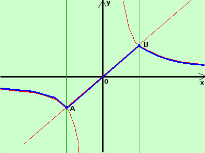

|
sviluppo tracciare il grafico della seguente funzione
La prima parte della funzione e' un segmento di retta (bisettrice del primo e terzo quadrante) che devo tracciare nella striscia verticale di piano compresa fra le rette verticali x>=-1 ed x=1; tale segmento inizia dal punto A(-1;-1) e termina nel punto B(1;1) La seconda parte della funzione e' una iperbole equilatera riferita agli assi cartesiani; devo tracciarla nelle due striscie verticali di piano la prima a sinistra della retta verticale x=-1 e la seconda a destra della retta verticale x=1; nelle linee di separazione abbiamo che termina ed inizia nei punti A(-1;-1) e B(1;1)  Nei punti di giunzione le due funzioni si collegano ; detto diversamente la funzione e' "connessa" cioe' posso spostarmi da un qualunque suo punto a qualunque altro tramite un cammino su punti della funzione stessa Si dice che tale funzione e' "continua" e Tuttavia, siccome nei punti di giunzione, la funzione cambia bruscamente di direzione si esprime tale concetto dicendo che tale funzione non e' derivabile in tali punti intuitivamente diremo che un a funzione puo' essere derivabile se non cambia bruscamente direzione (il solo non cambiare direzione non basta: per essere derivabile deve anche essere continua: vedi il prossimo esercizio) Questa e' una definizione "intuitiva" se vuoi la definizione "ufficiale" di derivata segui ilk link Disegno la retta e l'iperbole (in rosso) considero le curve disegnate nelle loro striscie di piano in blu il risultato finale |